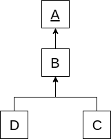

Here is a picture that shows a class hierarchy.
Note. The arrow is directed from a subclass to the base class. The base class is underlined.
Which of the following represents the same hierarchy?
a)
class A { }
class B extends A { }
class C extends A { }
class D extends A { }b)
class A { }
class B extends A { }
class C extends A { }
class D extends B { }c)
class A { }
class B extends A { }
class C extends B { }
class D extends B { }d)
class A { }
class B { }
class C extends B { }
class D extends B { }